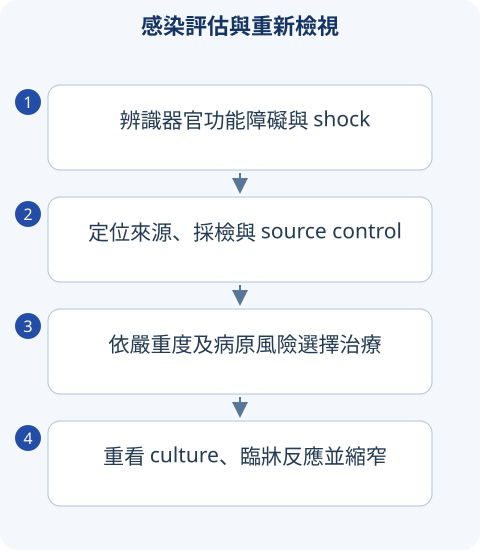

判讀圖解

詳讀 01發燒：先看宿主、部位與危險程度
感染、免疫炎症、惡性腫瘤、藥物及血栓都可發燒。病史要包含發病時程、旅遊、職業、動物／海水、飲食、性接觸、器材、近期住院與抗菌史。免疫低下可能不發燒或 WBC 不高；發燒高低也不等於感染嚴重度。
先找 hypotension、意識、呼吸、尿量、皮膚灌流與區域性感染源。血液培養採多組與適當部位，最好抗菌前，但不能為採檢延誤休克治療。CRP／procalcitonin 是輔助，不單獨決定所有抗菌啟動或排除。
詳讀 02Sepsis 定義：不要混用 SIRS、qSOFA、SOFA
Sepsis-3 是感染造成失調宿主反應，導致危及生命的器官功能障礙；操作上常用 SOFA 急增 ≥2。Septic shock 在適當復甦後仍需 vasopressor 維持 MAP ≥65 mmHg 且 lactate >2 mmol/L。Lactate 高可由多種原因，不能說所有高 lactate 都感染。
qSOFA 是意識改變、RR ≥22、SBP ≤100 的風險線索，不是 sepsis 診斷標準，也不應當唯一篩檢。SIRS 為舊的炎症反應框架，非感染也會符合。考題若明示舊標準仍需辨識其體系。
初期處置與後續重評
適當抗菌、crystalloid 與 source control 同步思考。SSC 2021 在 sepsis-induced hypoperfusion／shock 建議初期約30 mL/kg／3h，但屬於需依情境與反應重評的建議，不是心衰、CKD 或已經鬱血者不看反應硬灌。Passive leg raise 等動態指標可輔助，不單憑 CVP 決定。
Norepinephrine 是常見首選 vasopressor；初始 MAP 約65再個別化。高可能 sepsis 或 shock 需迅速抗菌；低可能、無 shock 的患者仍要限時診斷與重新評估，不把「每位發熱都立即最大譜」當定律。每日縮窄／停藥與療程評估，找感染之外原因。
詳讀 03感染源控制：抗生素不能取代引流
膿瘍、感染且阻塞的尿路／膽道、壞死組織、感染器材需考引流、清創、移除或手術。壞死性筋膜炎的 pain out of proportion、迅速進展、毒性、bullae 是關鍵；氣體或皮膚紅尚未明顯也不能排除。高疑而不穩定不能為了 CT 延誤外科評估。
詳讀 04CNS、心內膜與尿路感染
腦膜炎
CSF bacterial 常 neutrophil、protein 高、glucose 低；viral 多 lymphocyte、glucose 較正常；TB／fungal 常 glucose 低與 lymphocyte，但早期可能重疊。懷疑細菌腦膜炎，LP 或影像有延遲時先抽血培養並及時治療；需要先 CT 的線索包括特定免疫、局灶神經、乳頭水腫／意識等，非人人常規 CT。
感染性心內膜炎
持續菌血症、雜音、栓塞、器材／瓣膜風險需血培與 echo；TTE 初步，人工瓣、高疑或需找並發常考 TEE。Duke criteria 需版本與完整條件，不能「一個陽性培養＋雜音」就所有人確診。新傳導障礙考 periannular abscess；心衰、難控感染、栓塞風險會改變手術策略。
UTI
Cystitis 偏 dysuria、frequency、suprapubic pain；pyelonephritis 偏發燒、flank pain／CVA tenderness。先分 complicated host、阻塞、妊娠與 systemic illness；尿 WBC／nitrite 都不是完美排除工具。Asymptomatic bacteriuria 多數不治，妊娠與特定泌尿侵入前等例外須辨識；老年 confused 加 bacteriuria 不必然就是 UTI 病因。
發燒、血壓低、腹部膿瘍，換更強抗生素就能完成治療嗎？
不能忽略 source control。感染源未引流可持續敗血，需同步復甦、適當抗菌與及時介入，並追蹤器官反應。
比較錶速覽
讀完上方詳解後，用以下表格複習診斷差異與治療重點。
速覽｜1｜感染評估：宿主、部位、病原與嚴重度
先找生命威脅、器官功能與需要引流／移除的來源；採檢不能造成救命治療延誤。
| 面向 | 要問／要查 | 意義 |
|---|---|---|
| 宿主 | 免疫抑制、器材、旅行、動物、近期抗生素／住院 | 決定病原與耐藥風險。 |
| 部位 | CNS、肺、尿路、皮膚、腹內、血流等 | 不同組織穿透需求與 source control。 |
| 採檢 | 血液／患部 culture，依病情採適當檢體 | 先確保品質；culture 陽性也可能汙染／定植。 |
| 迴圈／器官 | 意識、尿量、血壓、氧合、lactate 與趨勢 | 敗血癥是感染造成的危及生命器官功能障礙。 |
| 追蹤 | 臨床反應、病原與 susceptibility | 依結果縮窄、停止或調整，避免無限延長。 |
寬表格可左右捲動
速覽｜2｜CNS 感染：CSF 與臨床整合
腦膜炎、腦炎、膿瘍與非感染原因都需考慮。
| 型態 | 典型 CSF 線索 | 陷阱 |
|---|---|---|
| 細菌性 meningitis | PMN 增多、protein 高、glucose 低 | 早期／已用藥可不典型；陰性 Gram stain 不排除。 |
| 病毒性 meningitis | 多淋巴球、glucose 常保留 | 早期可 PMN；HSV encephalitis 需 PCR 與及時評估治療。 |
| TB／fungal | 淋巴球、protein 高、glucose 低 | 免疫狀態與 exposure，特定檢驗／culture。 |
| Brain abscess | focal signs／影像，可能 mass effect | LP 不一定適合；影像、介入與病原評估。 |
寬表格可左右捲動
需要先做影像或不能立即 LP 時，不應因此拖延適當抗感染；須按宿主、腦壓／區域性神經徵象判斷。
速覽｜3｜軟組織、尿路與關節感染
器材、阻塞、膿瘍與壞死組織會改變處置。
| 情境 | 重點 |
|---|---|
| Cellulitis／abscess | non-purulent 與 purulent 分開；膿瘍引流是重要處置。 |
| Necrotizing infection | 痛超過表現、快速進展、毒性／shock；立即外科評估，不能只等影像。 |
| UTI／pyelonephritis | 有無症狀、發燒、上泌尿道與 obstruction；無症狀 bacteriuria 不等於一律治療。 |
| Septic arthritis | 抽 synovial fluid、culture 與 source control；發現 crystal 仍不能排除合併感染。 |
| Diabetic foot | 區分感染、ischemia、neuropathy、深部／骨感染；多專科整合。 |
寬表格可左右捲動
指引與公告補充
以下補充已依列出的版本核對；與 2020 年參考書的學習整理分開標示。
疑似 septic shock 或 probable／definite sepsis 應立即抗感染，理想上 1 小時內；possible sepsis 且無 shock 時先快速評估，若疑慮持續則於辨識後 3 小時內。採 culture 理想上在給藥前；需要 source control 者應及早處理。 查閱來源
來源與版本
書籍學習來源：《國考分科詳解—醫學（三）》2020 年版，第 3 冊〈腎內・感染〉；本頁對應章節導讀位置為 PDF 第 139–164 頁（含封面，與書內印刷頁碼不同）。
依章節重寫比較與判讀重點；指引補充另列版本。圖解與情境練習為本站原創。核對日：2026/09/30。
詳細補充的來源範圍
上方「詳讀」為依原參考書主題架構重寫的基礎、臨床判讀與國考複習說明；原表格保留於速覽區。數值適用條件及舊題版本差異寫於對應小節；本頁未逐題收錄所有歷屆試題。
本輪擴充：2026/10/05。指引連結支援各自的更新主題；基礎病生理、藥物機轉與鑑別依書籍架構整理。